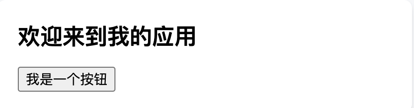

使用 TypeScript¶
TypeScript 是一种向 JavaScript 代码添加类型定义的常用方法。TypeScript 天然支持 JSX——只需在项目中添加 @types/react 和 @types/react-dom 即可获得完整的 React Web 支持。
1. 安装¶
所有的 生产级 React 框架 都支持使用 TypeScript。请按照框架特定的指南进行安装：
1.1 在现有 React 项目中添加 TypeScript¶
使用下面命令安装最新版本的 React 类型定义：
然后在 tsconfig.json 中设置以下编译器选项：
- 必须在
lib中包含dom（注意：如果没有指定lib选项，默认情况下会包含dom）。 jsx必须设置为一个有效的选项。对于大多数应用程序，preserve应该足够了。 如果你正在发布一个库，请查阅jsx文档 以选择合适的值。
2. 在 React 组件中使用 TypeScript¶
注意
每个包含 JSX 的文件都必须使用 .tsx 文件扩展名。这是一个 TypeScript 特定的扩展，告诉 TypeScript 该文件包含 JSX。
使用 TypeScript 编写 React 与使用 JavaScript 编写 React 非常相似。与组件一起工作时的关键区别是，你可以为组件的 props 提供类型。这些类型可用于正确性检查，并在编辑器中提供内联文档。
以 快速入门 指南中的 MyButton 组件 为例，我们可以为按钮的 title 添加一个描述类型：

| App.tsx | |
|---|---|
注意
这些沙盒可以处理 TypeScript 代码，但它们不运行类型检查器。这意味着你可以修改 TypeScript 沙盒以进行学习，但你不会收到任何类型错误或警告。要进行类型检查，你可以使用 TypeScript Playground 或使用更完整的在线沙盒。
这种内联语法是为组件提供类型的最简单方法，但是一旦你开始描述几个字段，它可能变得难以管理。相反，你可以使用 interface 或 type 来描述组件的 props：

描述组件 props 的类型可以根据需要变得简单或复杂，但它们应该是使用 type 或 interface 描述的对象类型。你可以在 对象类型 中了解 TypeScript 如何描述对象，但你可能还对使用 联合类型 描述可以是几种不同类型之一的 prop，以及在 从类型创建类型 指南中参考更高级的用例。
3. Hooks 示例¶
来自 @types/react 的类型定义包括内置的 Hook，因此你可以在组件中使用它们，无需任何额外设置。它们是根据你在组件中编写的代码构建的，所以你会得到很多 类型推断，并且理想情况下不需要处理提供类型的细节。
但是，我们可以看一下如何为 Hook 提供类型的几个示例。
3.1 useState¶
useState Hook 会重用作为初始 state 传入的值以确定值的类型。例如：
这将为 enabled 分配 boolean 类型，而 setEnabled 将是一个接受 boolean 参数的函数，或者返回 boolean 的函数。如果你想为 state 显式提供一个类型，你可以通过为 useState 调用提供一个类型参数来实现：
在这种情况下，这并不是很有用，但是当你有一个联合类型时，你可能想要提供一个 type。例如，这里的 status 可以是几个不同的字符串之一：
type Status = "idle" | "loading" | "success" | "error";
const [status, setStatus] = useState<Status>("idle");
或者，如 选择 state 结构原则 中推荐的，你可以将相关的 state 作为一个对象分组，并通过对象类型描述不同的可能性：
3.2 useReducer¶
useReducer 是一个更复杂的 Hook，它接受一个 reducer 函数和一个初始 state 作为参数，并将从初始 state 推断出 reducer 函数的类型。你可以选择性地为 useReducer 提供类型参数以为 state 提供类型。但是更好的做法仍然是在初始 state 上添加类型：
我们在几个关键位置使用了 TypeScript：
interface State描述了 reducer state 的类型。type CounterAction描述了可以 dispatch 至 reducer 的不同 action。const initialState: State为初始 state 提供类型，并且也将成为useReducer默认使用的类型。stateReducer(state: State, action: CounterAction): State设置了 reducer 函数参数和返回值的类型。
除了在 initialState 上设置类型外，一个更明确的替代方法是为 useReducer 提供一个类型参数：
3.3 useContext¶
useContext 是一种无需通过组件传递 props 而可以直接在组件树中传递数据的技术。它是通过创建 provider 组件使用，通常还会创建一个 Hook 以在子组件中使用该值。
从传递给 createContext 调用的值推断 context 提供的值的类型：
当你没有一个合理的默认值时，这种技术是有效的，而在这些情况下，null 作为默认值可能感觉是合理的。但是，为了让类型系统理解你的代码，你需要在 createContext 上显式设置 ContextShape | null。
这会导致一个问题，你需要在 context consumer 中消除 | null 的类型。我们建议让 Hook 在运行时检查它的存在，并在不存在时抛出一个错误：
3.4 useMemo¶
useMemo 会从函数调用中创建/重新访问记忆化值，只有在第二个参数中传入的依赖项发生变化时，才会重新运行该函数。函数的类型是根据第一个参数中函数的返回值进行推断的，如果希望明确指定，可以为该 Hook 提供一个类型参数以指定函数类型。
// 从 filterTodos 的返回值推断 visibleTodos 的类型
const visibleTodos = useMemo(() => filterTodos(todos, tab), [todos, tab]);
3.5 useCallback¶
useCallback 会在第二个参数中传入的依赖项保持不变的情况下，为函数提供相同的引用。与 useMemo 类似，函数的类型是根据第一个参数中函数的返回值进行推断的，如果希望明确指定，可以为这个 Hook 提供一个类型参数以指定函数类型。
当在 TypeScript 严格模式下，使用 useCallback 需要为回调函数中的参数添加类型注解。这是因为回调函数的类型是根据函数的返回值进行推断的——如果没有参数，那么类型就不能完全理解。
根据自身的代码风格偏好，你可以使用 React 类型中的 *EventHandler 函数以在定义回调函数的同时为事件处理程序提供类型注解：
4. 常用类型¶
当逐渐适应 React 和 TypeScript 的搭配使用后, 可以尝试阅读 @types/react，此库提供了一整套类型。你可以在 DefinitelyTyped 的 React 目录中 找到它们。我们将在这里介绍一些更常见的类型。
4.1 DOM 事件¶
在 React 中处理 DOM 事件时，事件的类型通常可以从事件处理程序中推断出来。但是，当你想提取一个函数以传递给事件处理程序时，你需要明确设置事件的类型。
React 类型中提供了许多事件类型 —— 完整列表可以在 这里 查看，它基于 DOM 的常用事件。
当你需要确定某个类型时，可以先将鼠标悬停在你使用的事件处理器上，这样可以查看到事件的具体类型。
当你需要使用不包含在此列表中的事件时，你可以使用 React.SyntheticEvent 类型，这是所有事件的基类型。
4.2 子元素¶
描述组件的子元素有两种常见方法。第一种是使用 React.ReactNode 类型，这是可以在 JSX 中作为子元素传递的所有可能类型的并集：
这是对子元素的一个非常宽泛的定义。第二种方法是使用 React.ReactElement 类型，它只包括 JSX 元素，而不包括 JavaScript 原始类型，如 string 或 number：
注意
你不能使用 TypeScript 来描述子元素是某种类型的 JSX 元素，所以你不能使用类型系统来描述一个只接受 <li> 子元素的组件。
你可以在这个 TypeScript playground 中查看 React.ReactNode 和 React.ReactElement 的示例，并使用类型检查器进行验证。
4.3 样式属性¶
当在 React 中使用内联样式时，你可以使用 React.CSSProperties 来描述传递给 style 属性的对象。这个类型是所有可能的 CSS 属性的并集，它能确保你传递给 style 属性的是有效的 CSS 属性，并且你能在编辑器中获得样式编码提示。
5. 更多学习资源¶
本指南已经介绍了如何在 React 中使用 TypeScript 的基础知识，但还有更多内容等待学习。官网中的单个 API 页面或许包含了如何与 TypeScript 一起使用它们的更深入的说明。 文档中的各个 API 页面可能会包含更深入的说明，介绍如何在 TypeScript 中使用它们。
我们推荐以下资源：
- TypeScript 官方文档 涵盖了大多数关键的语言特性。
- TypeScript 发布日志 深入介绍了每一个新特性。
- React TypeScript Cheatsheet 是一个社区维护的，用于在 React 中使用 TypeScript 的速查表，涵盖了许多有用的边界情况，并提供了比本文更广泛全面的内容。
- TypeScript Community Discord 是一个提问并获得有关 TypeScript 和 React issues 帮助的好地方。